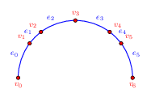

- Generated by
 1.17.0
1.17.0
|
CGAL 6.3-dev - 1D Arrangements
|
The package Arrangement_on_curve_1 is designed for constructing, manipulating, and querying one-dimensional arrangements embedded along continuous curves referred to as master curves. A 1D arrangement offers an efficient mechanism to maintain ordered sequences of points across diverse geometric tracking scenarios. Figure 36.1 shows a 1D arrangement embedded on the closed upper semicircle. It has seven vertices \(v_0,v_1,...,v_6\) and six edges \(e_0, e_1, ..., e_5\); see Arrangement_on_curve_1/arr_on_circle_segment.cpp.

Following standard CGAL architectural practices, this package strictly isolates the topological framework from the underlying geometry.
The core arrangement structure handles its geometry traits via a shared smart pointer (std::shared_ptr<const Geometry_traits_1>) to optimize lifecycle safety and reference tracking during intensive geometric operations. This allows sub-arrangements or output results to safely share identical geometric contexts with zero duplication overhead.
The master curve \(C = \phi_C(X)\) is given by a continuous function \(\phi_C: X \rightarrow \mathbb{R}^d\); it is defined over a one-dimensional interval \(X\) called the parameter space. The parameter space can be open, closed, left-closed, right-closed, or identified. Each geometry traits model declares two category types that determine the boundary conditions of both sides of the parameter space, respectively:
Each category type above is defined as one of the three tag types below:
| Tag | Meaning |
|---|---|
| Open_side_tag | The side is open: the curve excludes its endpoint on that side, if any |
| Closed_side_tag | The side is closed: the curve includes its endpoint on that side |
| Identified_side_tag | The side is identified with the other side: the curve is cyclic |
A curve whose two sides are closed is a closed curve, and a curve whose two sides are open is an open curve. A curve whose two sides are identified is a cyclic curve; it is essentially an open curve whose two (excluded) ends meet at the identification point, which is part of the curve only once it is inserted as a vertex.
The combination of the two category tags determines which topology traits class to pair with the geometry traits; see The Topology Traits.
This manual walks through the structural elements of basic 1D subdivisions, methods for traversing topology pools, techniques for point location, procedures for overlay operations, input and output of arrangements, the requirements for writing custom geometry traits, the topology traits classes, the mechanism for extending arrangement cells (i.e., vertices and edges), and the means of accessing cell properties (including extended data) via property maps.
The types and free functions referred to throughout this chapter are defined under the namespace CGAL::Arrangement_on_curve_1.
A 1D arrangement subdivides a continuous curve into two alternating topological cells:
The primary interface is provided by the class template Arrangement_on_curve_1<GeometryTraits_1, TopologyTraits, BinarySearch>, which models the concept ArrangementOnCurve_1. It exposes safe APIs for query evaluations while delegating memory container allocations, incidence cell updates, and property map indexing to the backend topology traits model.
When TopologyTraits is omitted it defaults to Default_topology_traits<GeometryTraits_1>::type, which selects the topology traits that matches the side categories of the geometry traits:
| Left_side_category | Right_side_category | Topology traits |
|---|---|---|
| Open_side_tag | Open_side_tag | Open_topology_traits |
| Closed_side_tag | Closed_side_tag | Closed_topology_traits |
| Closed_side_tag | Open_side_tag | Left_closed_topology_traits |
| Open_side_tag | Closed_side_tag | Right_closed_topology_traits |
| Identified_side_tag | Identified_side_tag | Identified_topology_traits |
Any other combination is rejected at compile time. For example, the following two definitions are equivalent:
Default_topology_traits accepts the same VertexData, EdgeData, UseVector, and Allocator template parameters as the topology traits classes; for example, Default_topology_traits<Gt, Vertex_data, void, true>::type is Identified_topology_traits<Gt, Vertex_data, void, true>.
An empty arrangement consists of a single edge representing the whole master curve.
Neighbor-to-neighbor structural traversals can be performed in either direction along the chain using incidence descriptor accessors like ArrangementOnCurve_1::left_edge(), ArrangementOnCurve_1::right_edge(), ArrangementOnCurve_1::left_vertex(), and ArrangementOnCurve_1::right_vertex().
The arrangement vertices and edges can be traversed using descriptor iterators. Callers can query all vertices or edges globally via ranges:
Arrangements can be dynamically built or modified using primitive update methods. When an arrangement is entirely empty, it consists of a single edge representing the whole master curve. Inserting the very first point p into an arrangement object arr uses arr.insert_empty(p). If the curve is not cyclic, this splits the single edge into a left edge and a right edge flanking the new vertex. If the curve is cyclic, it creates the first vertex, and the single edge becomes a self-loop with both ends at that vertex.
The arrangement class provides low-level topological construction modifiers to handle structured manual assembly:
Note that when the template parameter BinarySearch of Arrangement_on_curve_1<GeometryTraits_1, TopologyTraits, BinarySearch> is set to true (and TopologyTraits::UseVector = true):
A vertex v can be removed from the arrangement using the call arr.remove(v).
Removing a vertex removes its point from the track and merges its left and right flanking edges back into a single unified edge, preserving the overall topological continuity of the curve. A boundary vertex of a closed side, and the only vertex of an arrangement on an identified parameter space, has a single incident edge; removing it removes no edge.
Given a query point \(q\), the call locate(arr, q) locates the query point q in the given arrangement arr. The function returns a discriminated union container of type ArrangementOnCurve_1::Const_location_result (an instance of std::variant) that identifies a cell (i.e., a vertex or an edge). In particular, the result is a Vertex_const_descriptor if the geometric embedding of the identified vertex coincides exactly with the query point \(q\), or otherwise an Edge_const_descriptor, such that the geometric embedding of the identified edge contains \(q\) in its interior.
The search is a linear topological walk from left to right starting at left_boundary_edge(). When BinarySearch = true and TopologyTraits::UseVector = true, the search uses binary search over the sorted vertex vector, reducing point location from \(O(n)\) to \(O(\log n)\).
A similar function that returns an object of type ArrangementOnCurve_1::Location_result storing a non-const descriptor is also supported.
A high-level free function to insert points into the arrangement is provided. The call insert(arr, p) invokes the function. It first calls locate(arr, p) internally to find where the point p is located. If the point already matches an existing vertex, the descriptor of that vertex is returned. Otherwise, the function invokes ArrangementOnCurve_1::insert_empty(), ArrangementOnCurve_1::insert_before(), ArrangementOnCurve_1::insert_after(), or ArrangementOnCurve_1::split_edge() as needed to safely update the topology.
The call overlay(arr_a, arr_b, arr_r) combines two input arrangements arr_a and arr_b aligned along the same continuous supporting curve into a single unified output arrangement arr_r (embedded in the same underlying curve). The algorithm performs a synchronized left-to-right sweep across both structures simultaneously.
An overloaded version accepts a fourth argument, referred to as the visitor, is also supported. As intersections, point overlaps, or edge segment splits are discovered, the process notifies user-specified callback functions defined in the visitor object, which must be a model of the OverlayVisitor concept. These functions can then apply custom logic to automatically combine, translate, or synchronize user extended cells from the input arrangements into the resulting output cells. The package provides two visitors: Default_overlay_visitor, which does nothing and is used by the overload without a visitor, and Copy_overlay_visitor, which copies the data of the input cells to the resulting cells.
An arrangement can be written to an output stream with operator<< and read from an input stream with operator>> , both defined in the header file CGAL/Arrangement_on_curve_1/IO/iostream.h. The format is textual: the number of vertices, followed by the points associated with the vertices in increasing order along the curve, each on its own line. If the parameter space is identified, the identification point, if present, is last. Only the points are stored; the edges are implied by them, and the data attached to the vertices and edges, if any, is neither written nor read. The points are written and read with the stream operators of AocTraits_1::Point_1, so the precision of the output depends on these operators.
Reading replaces the content of the arrangement. If the input is malformed, for example, if the points are not in increasing order, the failbit of the stream is set and the arrangement is left empty.
A model of the geometry traits must satisfy the requirements of the AocTraits_1 concept. It defines the types for geometric points (Point_1) and provides a factory function producing a Compare_x_1 comparison functor. This functor must provide a strict linear ordering predicate, returning SMALLER, EQUAL, or LARGER when comparing two points along the curve direction.
In addition, the geometry traits declares two boundary-category tags:
When both tags are Identified_side_tag, the traits must also provide a functor type AocIdentifiedBoundaryTraits_1::Is_on_x_identification_1 (accessed via is_on_x_identification_1_object()) that tests whether a given Point_1 coincides with the identification point. The AocTraits_1::Compare_x_1 functor must not be called with such a point.
The package provides five built-in geometry traits models covering different dimensional spaces and curve topologies:
The topology traits are responsible for the combinatorial storage and navigation of the arrangement. A model must satisfy the requirements of the AocTopologyTraits concept. It provides:
The package provides five topology traits class templates, which model the concept AocTopologyTraits, one for each supported combination of side categories; see Default_topology_traits. All five maintain the arrangement as an alternating sequence of vertices and edges, and they share the following properties:
Some classes also maintain vertices that lie on the boundary of the parameter space, which are created when the corresponding point is inserted:
| Topology traits | Additional vertices | Accessors |
|---|---|---|
| Open_topology_traits | None | |
| Closed_topology_traits | Left and right boundary | Those of the two classes below |
| Left_closed_topology_traits | Left boundary | has_left_boundary_vertex(), left_boundary_vertex() |
| Right_closed_topology_traits | Right boundary | has_right_boundary_vertex(), right_boundary_vertex() |
| Identified_topology_traits | Identification | has_identification_vertex(), identification_vertex() |
All five class templates have the same template parameters:
| Parameter | Default | Meaning |
|---|---|---|
| GeometryTraits_1 | (required) | the geometry traits |
| VertexData | void | optional user data per vertex |
| EdgeData | void | optional user data per edge |
| UseVector | false | true = vector + index descriptors |
| Allocator | std::allocator<char> | allocator for internal containers |
The topology traits classes do not declare the kind of the parameter space. Instead, Arrangement_on_curve_1 derives it from the side categories of the geometry traits, and provides three static predicates:
The UseVector template parameter controls the underlying container and descriptor type:
Open_topology_traits is the topology traits for arrangements on an open curve (Left_side_category = Right_side_category = Open_side_tag).
It maintains no vertices beyond those of the common structure; like all topology traits classes, it maintains the left and right boundary edges:
| Member | Description |
|---|---|
| AocTopologyTraits::left_boundary_edge() | Returns the left boundary edge descriptor. |
| AocTopologyTraits::set_left_boundary_edge() | Sets the left boundary edge descriptor. |
| AocTopologyTraits::right_boundary_edge() | Returns the right boundary edge descriptor. |
| AocTopologyTraits::set_right_boundary_edge() | Sets the right boundary edge descriptor. |
Identified_topology_traits supports cyclic curves (Left_side_category = Right_side_category = Identified_side_tag).
Circle_traits_1<Kernel> provides a geometry traits model for 1D arrangements of points on the unit circle \(\mathbb{S}^1\). Points are represented as Kernel::Direction_2 objects.
The parameter space of \(\mathbb{S}^1\) is \([\theta_{\mathrm{ref}}, \theta_{\mathrm{ref}} + 2\pi)\) with the two endpoints identified, where \(\theta_{\mathrm{ref}}\) is the angle of the reference direction \(d_{\mathrm{ref}}\) described below; by default, \(\theta_{\mathrm{ref}} = 0\). Both Left_side_category and Right_side_category are Identified_side_tag. Consequently, Circle_traits_1 must be paired with Identified_topology_traits.
An optional reference direction \(d_{\mathrm{ref}}\) (default: positive x-axis \((1,0)\)) defines the identification point. The total order on directions is the counter-clockwise (CCW) order starting strictly after \(d_{\mathrm{ref}}\): \(d_{\mathrm{ref}} < d_1 < d_2 < \ldots < d_n < d_{\mathrm{ref}}\) (one full turn).
A direction equal to \(d_{\mathrm{ref}}\) is the identification point: AocIdentifiedBoundaryTraits_1::Is_on_x_identification_1 returns true for it, and AocTraits_1::Compare_x_1 must not be called with it as either argument.
The comparison is implemented using only the kernel predicate Kernel::CompareAngleWithXAxis_2 (no trigonometric computation), which compares the angles in \([0, 2\pi)\) between the positive \(x\)-axis and two directions. If \(d_{\mathrm{ref}}\) is the positive \(x\)-axis, the order of two directions \(d_1\) and \(d_2\) is the order of their angles. Otherwise, the directions whose angles are larger than the angle of \(d_{\mathrm{ref}}\) precede the others, and within each of these two groups, the order is the order of the angles.
Topological cells can be extended with custom user attributes using template parameters for vertex and edge data inside the topology traits. All five topology traits classes accept VertexData and EdgeData template parameters. When data types are provided, they are stored directly inside the respective vertex and edge records; when a data type is void, the records carry no data member at all, so there is no memory overhead.
These attributes can be read or modified cleanly using standard Boost lvalue property maps accessed via ArrangementOnCurve_1::vertex_data_map() and ArrangementOnCurve_1::edge_data_map().